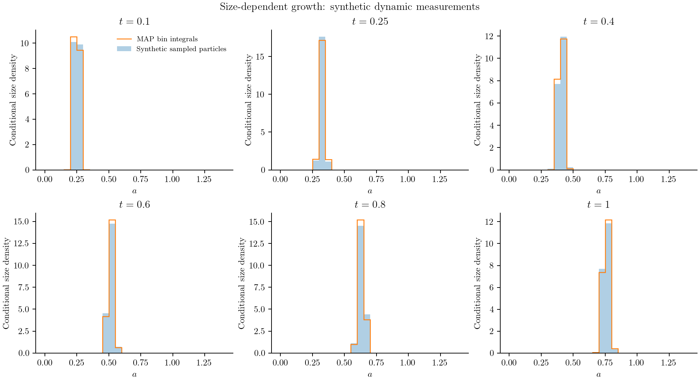
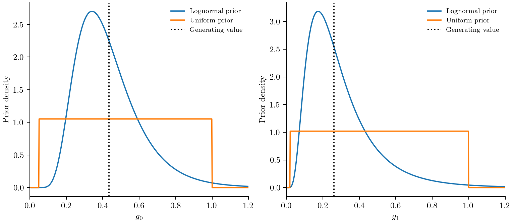
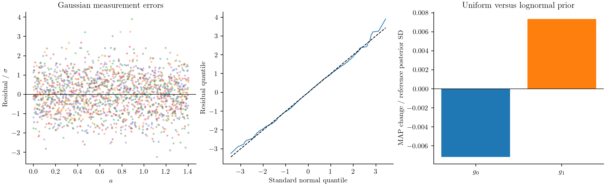
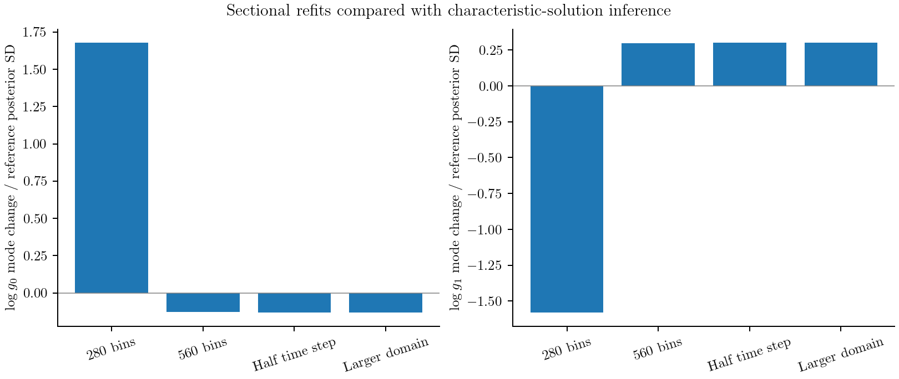

Parameter estimation
Parameter estimation connects a PBM to noisy measurements. We need a prediction at each measurement time, a model for the measurement errors, and priors for the unknown parameters. The package uses those same definitions for MAP fitting, optional Laplace uncertainty and optional MCMC sampling.
The growth example fits $G(a)=g_0+g_1a$. It evaluates the analytical density at 281 sizes and six times, then samples independent Gaussian measurements conditioned to be nonnegative. The likelihood includes that truncation. The initial density and noise level are known; only the two growth coefficients are fitted. The points below are these synthetic measurements, and the continuous curves show the fitted densities.

Describe the measurements
An observation operator maps a solved PBM state to a predicted measurement. MomentObservable, BulkObservable, FunctionObservable and SystemObservable can all be used in a Measurement. For the analytical growth example, evaluate point densities directly and use the known truncated-Gaussian error:
profile = FunctionObservable((N,operator,p,t)->
recipe.exact_density.(data.sizes,t,Ref(p)))
measurement = Measurement(data.times,data.values,profile;
likelihood=TruncatedGaussianLikelihood(sigma=data.noise))The case-study builder supplies recipe, data and the physical problem. Other instruments produce histograms or bulk measurements. For a sectional distribution, DistributionObservable integrates over the measurement bins:
histogram = DistributionObservable(measured_edges;
coordinate=:length, population=:crystals, weight=L->1.0)
sizes = Measurement(times, counts, histogram;
likelihood=MultinomialLikelihood(), source=:particle_counter)
concentration = Measurement(times, measured_concentration, BulkObservable(:c);
likelihood=GaussianLikelihood(sigma=(theta,experiment)->theta.noise),
source=:concentration_instrument)Data matrices have one output per row and one time per column. Each experiment solves at the union of its measurement times. The likelihood sums all bins, times, and experiments; it is never divided by the number of observations.
The coordinate must agree with the model. Diameter and volume densities differ by a change-of-variable Jacobian. Weighting is also explicit: number uses L->1.0, volume can use L->π*L^3/6, and the nanoparticle scattering approximation uses L->L^6. Bin values are integrals, not density values sampled at centres. Weighted sectional integrals use eight-point Gauss quadrature of the piecewise-constant solver density.
A response callback response(lo,hi,L,p,t) can supply the probability that a particle of true size L is detected in a measured bin. This is the hook for sizing uncertainty and detection efficiency. Its probabilities must be finite and between zero and one. Resolve discontinuities explicitly; quadrature through an unresolved detection threshold is another numerical approximation.
Moment states can predict compatible moments and explicit observation integrals. A histogram requires an independently specified reconstruction, supplied through a custom observable. QMOM nodes and weights are quadrature data; they are not automatically a uniquely determined measured PSD.
Choose the likelihood
The choice follows how the instrument produced the data.
| Data | Likelihood | Interpretation |
|---|---|---|
| Actual particle counts in bins, with a sampled total at each time | MultinomialLikelihood() | Conditional size probabilities in the measurement window |
| Absolute counts from a known sampled volume or exposure | PoissonLikelihood(exposure=...) | Expected counts equal predicted bin concentration times exposure |
| Suitable continuous outputs | GaussianLikelihood(sigma=...) or covariance=... | Absolute errors or an explicitly fitted noise model |
| Nonnegative continuous measurements | TruncatedGaussianLikelihood(sigma=...,lower=0) | Independent Gaussian measurements conditioned above the specified lower bound; not a clipping model |
| Normalized continuous fractions | GaussianLikelihood with independent contrasts | Continuous instrument fractions, without an invented particle count |
For sampled counts $y_i$, let $N=\sum_i y_i$ and normalize the predicted bin integrals to probabilities $p_i$ over the stated window. The multinomial contribution is
\[\log p(\boldsymbol y\mid\theta) =\log(N!)-\sum_i\log(y_i!)+\sum_i y_i\log p_i(\theta).\]
The measured total supplies the statistical sample size. Twice as many sampled particles generally supplies more information. A normalized instrument trace does not supply that count, and must not be multiplied by an arbitrary N. Zero counts are valid. A nonzero count in a zero-probability bin has zero likelihood.
For absolute Poisson counts, the contribution retains both $y_i\log\lambda_i-\lambda_i$ and the factorial normalization. For Gaussian outputs with covariance $\Sigma(\theta)$,
\[\log p(\boldsymbol y\mid\theta) =-\frac12[\widehat{\boldsymbol y}(\theta)-\boldsymbol y]^\mathsf T \Sigma(\theta)^{-1}[\widehat{\boldsymbol y}(\theta)-\boldsymbol y] -\frac12\log\det\Sigma(\theta)-\frac n2\log(2\pi).\]
The determinant is essential when noise parameters are inferred. Covariance may be a fixed matrix or (theta,experiment)->matrix and applies to vec(data): outputs within a time, then successive times.
For independent truncated-Gaussian measurements with lower bound zero, retain the normalization for every observation:
\[\log p(y_i\mid\theta) =-\frac{[y_i-\mu_i(\theta)]^2}{2\sigma_i^2} -\log\sigma_i-\frac12\log(2\pi) -\log\Phi\!\left(\frac{\mu_i(\theta)}{\sigma_i}\right),\qquad y_i\ge0.\]
The location $\mu_i$ is the model's latent prediction; the conditional measurement mean differs near zero. sigma may be fixed or a (theta,experiment)->scales callback. Correlated truncation is not implemented. Use this likelihood when measurements follow that model; censored instruments and clipped outputs require different likelihoods.
Normalized fractions have a sum constraint. Supply a full-row-rank contrast matrix A with $A\boldsymbol1=0$ and their covariance:
fractions = Measurement(times, fractions_data,
DistributionObservable(edges; coordinate=:length, normalize=true);
likelihood=GaussianLikelihood(covariance=Sigma, contrasts=A))The likelihood projects data, predictions and covariance before factorization. It does not invert the singular full covariance or add a diagonal ridge. Predictive outputs from this likelihood are also in contrast coordinates. The Gaussian contrast model is an unbounded approximation. Choose it where noise outside the physical simplex is negligible; bounded-simplex measurements need a different response/likelihood model. Declared normalized fractions and post-response predictions must lie in $[0,1]$ and sum to one at every time (absolute normalization tolerance $10^{-10}$). Invalid data are rejected; they are never renormalized or clipped.
If moments were calculated from the measured histogram, they share its measurement errors. Use the histogram alone, or a joint vector observable with the appropriate joint covariance; do not count both as independent evidence. Use the same source tag on dependent blocks: InferenceExperiment rejects duplicate tags. Untagged dependence cannot be inferred automatically.
Declare fitted and fixed parameters
Each scalar declaration states its physical initial value, transform and prior:
using Distributions
g0 = ParameterSpec(:g0; initial=0.4, transform=LogTransform(),
prior=Prior(LogNormal(log(0.4),0.4); coordinates=:physical))
noise = ParameterSpec(:noise; initial=0.003, transform=LogTransform(),
role=:nuisance,
prior=Prior(Normal(log(0.003),0.4); coordinates=:inference))Both priors above imply Gaussian log coordinates. The noise declaration is an optional nuisance parameter when noise is unknown; the growth case study keeps its noise fixed. The coordinate declaration identifies which density is meant. There is no implicit prior-coordinate default. IdentityTransform supports a location and scale; LogTransform supports a positive reference scale. LogitTransform(lower,upper) gives an open bounded physical interval. Additional physical restrictions belong in the estimation problem's constraints callback; truncating admissible support changes the prior.
A shared parameter has no experiment name. Add experiment=:batch_B to make a fitted parameter local to that experiment. Put known values in the problem's fixed tuple or the experiment's fixed tuple. A name cannot be fixed and fitted, or shadow a shared parameter locally.
An experiment's setup callback constructs its actual initial-value problem:
setup = function (theta, base)
u0 = copy(base.u0)
population(base,u0,:crystals) .*= theta.initial_scale
remake(base; u0, p=theta)
end
experiment = InferenceExperiment(:batch, base_problem, sizes, concentration;
setup, dt=0.002)
problem = EstimationProblem(parameters, (experiment,); fixed=(known_value=1.0,))This permits uncertain initial populations, bulk initial states, calibration factors and noise parameters. A Measurement response callback (prediction,theta,experiment)->... can apply a calibration factor. Operating histories remain in the physical problem or are rebuilt by setup. The default setup merges physical parameters into a NamedTuple p.
Keep the density coordinates explicit
The inference vector is $z$, with physical parameters $\theta=T(z)$. For each physical-coordinate prior the package evaluates
\[\log p_z(z)=\log p_\theta(T(z))+\log|\det J_T(z)|.\]
An inference-coordinate prior needs no additional Jacobian. This adjustment occurs exactly once in logprior. MAP, Hessian calculations and NUTS all use
\[\log p(z\mid y)=\sum_e\log p(y_e\mid T(z))+\log p_z(z)+\text{constant}.\]
The functions loglikelihood, logprior and logposterior expose these separate evaluations. posterior_components returns all three at one coordinate vector. Returned physical parameter values are the transformed z-density mode. Modes depend on density coordinates: transforming that mode does not generally give the mode of the physical-coordinate density. Every result records its parameter declarations and coordinates.
Fit the posterior mode
Load Optim in a working environment. For a constructed EstimationProblem:
using Optim
result = fit(problem) # MAP by default, starting from ParameterSpec initial values
result.parameters
result.diagnostics.gradient_norm
result = fit(problem; nstarts=3, seed=22, scaling=ones(length(problem.parameters)))
# Or supply explicit inference-coordinate vectors:
result = fit(problem; starts=[z_start_1,z_start_2])The default is BFGS with ForwardDiff derivatives of the shared posterior. The supplied scaling affects the optimizer coordinates, not the statistical density being optimized. Convergence uses the gradient in those optimizer coordinates; diagnostics retain both raw z gradients and scaled gradients, together with the requested tolerance. Choosing scales is therefore part of the numerical specification. A seeded perturbation generates extra starts. Multiple starts improve exploration but do not establish a global optimum.
The selected gradient is checked against step-halved central differences before fitting and sampling. Those differences verify the derivative; they are not the default optimizer or NUTS gradient. Limiters can produce nonsmooth objectives; a local derivative check does not establish global smoothness.
Results retain separate likelihood/prior contributions, convergence, gradients, objective history, start outcomes, instrumented forward-solve counts and timing. NumericalFailure rejects an evaluation and records a message. Programming errors propagate. An external solver must check its success code and return exactly the requested output times. Invalid derivatives are reported rather than replaced silently with finite differences.
Choose how derivatives are calculated
EstimationProblem(...;derivatives=:auto) and the legacy CalibrationProblem use ForwardDiff by default. This propagates parameter derivatives through the actual calculation, including transforms, prior Jacobians, observation responses and inferred noise. For a small parameter vector it usually requires one dual-number solve per experiment, rather than two perturbed solves per parameter. Larger vectors are processed in ForwardDiff chunks. Evaluation counts describe these solves, not the number of underlying arithmetic operations.
posterior_gradient(problem,z)
likelihood_gradient(problem,z) # excludes the prior
check_gradient(problem,z) # independent finite-difference verification
result.diagnostics.derivative_backend
result.diagnostics.gradient_evaluations
result.diagnostics.forward_solvesCallbacks must preserve their numeric input types: use similar(u) or zeros(eltype(u),...) for state-dependent storage, and avoid converting fitted values to Float64. See ForwardDiff's limitations. AD has been checked for the analytical growth observable, native sectional growth/removal, exactly closed moments, and coupled bulk balances. A fixed grid is important. The Inguva fitting recipe rebuilds a mesh whose number of cells can change with parameters; it explicitly requests finite differences. Eigen-based QMOM inversion is also outside the verified AD path. Select derivatives=:finite_difference for such a calculation and inspect step-size checks. An incompatible AD callback raises DifferentiationFailure.
For a differentiable ODE residual, the optional adapter instead integrates continuous forward sensitivities or an interpolating adjoint:
import SciMLBase
using SciMLSensitivity, OrdinaryDiffEqTsit5
solver = SciMLSensitivitySolver(Tsit5();sensitivity=:auto,
reltol=1e-8,abstol=1e-10)
experiment = InferenceExperiment(:batch,physical_problem,measurements...;
setup,solver)
problem = EstimationProblem(parameters,(experiment,))Install these optional packages in the working environment. SciMLSensitivity loads ReverseDiff, which the adapter uses for the scalar likelihood's state gradient. No sensitivity packages are loaded for a native fit. The automatic rule chooses forward sensitivities for at most 16 fitted coordinates and the adjoint otherwise. This is a starting heuristic, not a cost guarantee; choose sensitivity=:forward or :adjoint and compare timings for the actual problem. Both include parameter-dependent initial states, shared and experiment-specific parameters, and direct observation/noise dependence. Correlations across measurement times enter one joint likelihood.
Forward sensitivities integrate $\partial u/\partial z$ alongside the state. The adjoint retains a dense forward trajectory, then integrates backward with measurement contributions. It avoids an augmented state for every parameter, but the current adapter forms local residual Jacobians and retains the trajectory; it is not a memory-free or matrix-free implementation. Tighten solver tolerances and check gradients when changing the residual or integrator. ODE adapters do not enforce the native CFL or positivity stage checks. Event callbacks are rejected because sensitivity jump rules are not implemented; prescribed time histories can use fixed tstops instead. Direct cell-shift methods are not ODE residuals and cannot use this adapter.
This uses the direct forward and direct adjoint interfaces. Merely adding sensealg to an ODE solve differentiated with ForwardDiff does not select an adjoint. The adapter explicitly invokes the sensitivity equations while reusing the package's likelihood.
Request Laplace uncertainty
laplace = laplace_approximation(problem,result)
# Equivalent opt-in convenience:
result = fit(problem; uncertainty=:laplace)
kinetics = marginal_covariance(problem,laplace; role=:kinetic)
draws = parameter_draws(problem,laplace; n=1000,seed=23)The Hessian uses nested ForwardDiff on the actual negative log posterior. Independent step-halved differences of its AD gradient verify the curvature:
\[H=\left.\frac{\partial^2[-\log p(z\mid y)]}{\partial z\,\partial z^\mathsf T} \right|_{\widehat z},\qquad p(z\mid y)\approx\mathcal N(\widehat z,H^{-1}).\]
All nuisance parameters enter this joint curvature. A kinetic marginal uses the corresponding block of the full covariance; inverting the kinetic Hessian subblock would instead condition on fixed nuisance parameters. With a SciML sensitivity adapter, this second derivative passes through the primal ODE solve; it does not differentiate a first-order adjoint. An explicitly selected finite-difference backend also uses finite-difference curvature.
Factorizations and solves form the covariance and draws. Nonconvergence, nonstationarity, unstable derivatives, nonpositive curvature or excessive conditioning reject the approximation with a LaplaceFailure report. No regularization converts an invalid Hessian into reported certainty. Positive local curvature does not establish unimodality or Gaussian tails. Intervals and parameter regions from these draws are labelled Laplace approximations and are transformed to physical coordinates explicitly. Draws include an in_support flag. Predictive propagation reports draws outside the declared prior/constraint support as failures; it does not silently truncate the Gaussian approximation.
The case study compares the previous lognormal growth priors with physical uniform priors bounded by stated growth timescales. These choices express different assumptions; neither is a universal default. Both are shown here, and their fitted posteriors are compared below.

Sample the same posterior
Sampling is requested separately and requires AdvancedHMC and MCMCDiagnosticTools in the working environment:
using AdvancedHMC, MCMCDiagnosticTools
samples = sample_posterior(problem; initial=result, laplace,
warmup=500, samples=1000, chains=4, seed=24)
report = diagnostics(samples)
report.rhat
report.ess_bulk
report.ess_tail
report.mcse_mean
report.per_chain
report.diagnostics_passedThe adapter uses NUTS and explicit posterior gradients. With a supplied Laplace approximation it adapts a dense metric initialized from its covariance; otherwise the default metric is diagonal. An explicit positive-definite initial_covariance also selects dense adaptation by default. This matrix is sampler tuning; supplying it does not establish a Laplace approximation. Laplace can inform dispersed chain starts and initial scale; explicit starts are also accepted. Warmup draws are excluded from the retained sample. Diagnostics include rank-normalized split R-hat, bulk and tail effective sample sizes, Monte Carlo standard errors of log-coordinate means, per-chain BFMI, acceptance rates, step sizes, divergences, warmup divergences, maximum-depth hits, gradient checks, evaluation counts and time. The result retains both warmup and post-warmup statistics. diagnostics_passed requires the reported R-hat/ESS thresholds, BFMI at least 0.3, no retained divergences or depth hits, and at least two chains. It is a screen, not proof of convergence. Inspect the traces and posterior shape before interpreting intervals.
Strongly correlated parameters can benefit from a bijective sampling_map with to_sampler, from_sampler, logabsdetjac and label fields. Here logabsdetjac(y) is the log absolute determinant of from_sampler at y. The adapter samples $\log p_z(\mathrm{from\_sampler}(y))+\log|\det J_{\mathrm{from\_sampler}}(y)|$. The inverse and determinant are checked at every mapped target evaluation. check_sampling_map(problem,map,z) also checks both inverse directions and the transformed gradient at a supplied point in the original posterior support. Use it at representative points and tails. The step argument controls the independent finite-difference verification stencil; check its halving where limiter switches or sharp likelihood curvature affect the comparison. Finite tests cannot prove that arbitrary callbacks are globally bijective or cover the whole posterior support; that remains a requirement of the supplied map. Priors remain in their originally declared coordinates; returned z draws and statistics.log_density remain in inference coordinates. A tuning matrix supplied with a map must be expressed in sampler coordinates. AdvancedHMC's DenseEuclideanMetric takes the inverse mass matrix: a supplied initial_covariance initializes that matrix, following its metric convention. Hamiltonian energies, BFMI and transition statistics remain those of the sampler coordinates, including the map Jacobian. They are not relabelled as inference-coordinate energies or covariance estimates. The protein crystallization study uses a unit-determinant map based on rates at a reference supersaturation and shows corner plots, prior comparisons and chain diagnostics.
See the upstream AdvancedHMC and MCMCDiagnosticTools documentation for sampler and diagnostic definitions. NUTS uses the same selected AD or ODE-sensitivity gradient as MAP; diagnostics record its backend.
The growth-estimation case compares priors, Laplace intervals and NUTS draws for synthetic density measurements. The protein case illustrates coefficient– exponent tradeoffs and predictive mismatch despite a passed sampling screen.
MCMC parameter_draws also returns indices into reshape(samples.z, number_of_parameters, :), with draws varying before chains. Retain these identities when exporting predictive curves. A seed alone need not reproduce randperm selection across Julia versions; the protein example exports posterior_predictive_indices.csv for that purpose. Sampling tuning matrices and transformed Hamiltonian energies retain their separate meanings.
Check prediction, identifiability and numerical error
Numerical-refinement and prior-sensitivity comparisons retain data, times, likelihood settings, fixed parameters, constraints and measurement responses. Changing a noise scale is a statistical-model change, not numerical refinement. The checks cannot establish that arbitrary model/setup callbacks describe the same physical initial conditions or observable; keep those definitions fixed when changing the solver, grid or domain.
Drawing approximate parameters does not solve the PBM. Predictive propagation has an explicit forward-solve budget:
draws = parameter_draws(problem,samples; n=40,seed=25)
prediction = posterior_predictive(problem,draws;
max_solves=40, measurement_noise=true, seed=26)One experiment per draw requires one solve; additional experiments multiply the cost. The budget is checked before execution. Returned blocks separate raw model outputs, latent measurement means and fresh measurement noise. Failures remain visible by draw. Poisson predictions include known exposure; multinomial predictive counts condition on the observed snapshot totals.
identifiability_report separates likelihood prediction sensitivities and observed likelihood curvature from prior curvature. Prediction rank uses the unscaled measurement units and omits noise-only information; inferred noise also enters the likelihood Hessian. These are local diagnostics, not proof of structural identifiability.
likelihood = estimation_profile(problem,result,index,values; target=:likelihood)
posterior = estimation_profile(problem,result,index,values; target=:posterior)Each profile reoptimizes every remaining coordinate, including nuisances. The likelihood profile obtains its own unpenalized reference optimum. Posterior profiles describe penalized posterior shape and have no ordinary likelihood-confidence threshold. Check every conditional convergence flag.
replacepriors retains the physical experiment and changes explicit prior declarations. priorsensitivity fits named alternatives and reports mode shifts in reference posterior SD units and changes in Laplace uncertainty. Its prior_sensitive flag uses explicit, configurable shift/scale-ratio thresholds; it is a screening rule, not an identifiability theorem. Prior dependence is evidence to examine, even when MAP is stable.
For the growth study, the residuals below apply the fitted truncated-Gaussian CDF to each measurement, then the inverse standard-normal CDF. This accounts for the asymmetric errors near zero density. The quantile plot compares these normal quantile residuals with a standard Gaussian. The final panel shows how much the rate estimates change when lognormal priors are replaced by uniform priors.

refinement_study refits explicitly named numerical variants. Keep measurements, parameter coordinates and priors consistent. Compare spatial resolution, size domain and time step separately; compare moment closures separately again, because closure error is a model approximation. The growth case study records such refits alongside reference posterior uncertainty. Parameter uncertainty, measurement noise, numerical error and physical model inadequacy remain different sources of discrepancy.
The growth example refits with Inguva2022 and MUSCL. The first method requires a matched travel-time mesh and time step, so they must be refined together. The MUSCL checks refine space, time and domain separately. The analytical solution supplies the reference; interpolating bin averages to point density measurements adds a separate observation-reconstruction error.

Existing Gaussian calibration interface
CalibrationProblem, Observation, Experiment and fit(calibration,z0) remain available for existing code. They implement the previous Gaussian maximum likelihood workflow. confidence_ellipsoid is its local frequentist calculation; it is not the Bayesian Laplace API. The older small kinetic examples remain regression examples. New Bayesian work should use EstimationProblem so all inference methods share priors, transforms and likelihood definitions.